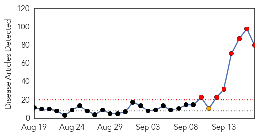
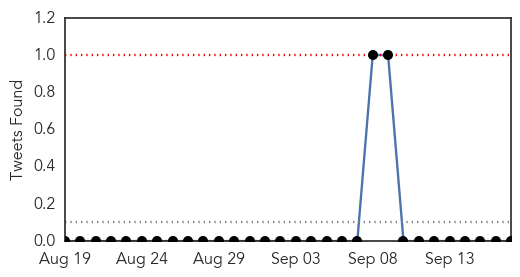
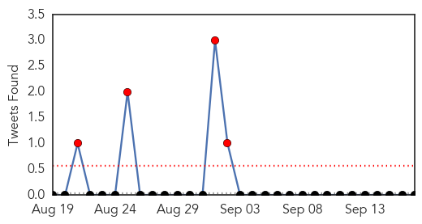
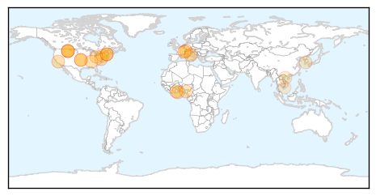

Dengue Fever
30-Day Web Trend
7 alerts, 1 warnings

30-Day Twitter Trend
0 alerts, 0 warnings

Article Locations

Article Confidences

Top Articles:
- 0.994
- India: High Court seeks report from Centre, Delhi government on dengue
- 0.994
- India: High Court seeks report from Centre, Delhi government on dengue
- 0.983
- Delhi Hospitals Struggle to Meet Demand for Beds
- 0.982
- Dengue cases: Delhi hospitals struggle to meet demand for beds
- 0.982
- Mounting cases of dengue trigger bed crunch in government hospitals in Delhi
- 0.981
- Dengue outbreak: Delhi corporations caught on wrong foot over data
- 0.979
- Philippines: Juan Ponce Enrile hospitalized with dengue fever
- 0.977
- 13 fresh cases reported in Noida
- 0.977
- Delhi govt caps dengue test rates at private hospitals
- 0.977
- All four strains circulating in country
- 0.977
- India Grapples with Dengue Fever Outbreak - India
- 0.976
- Dengue menace in Delhi: Toll touches 14, hospitals to take in more doctors : Delhi, News
- 0.973
- Delhi hospitals warned not to turn away dengue patients
- 0.973
- Dengue claims first victim in Haryana
- 0.972
- Dengue scare: Hospital face space crunch; doctors overloaded
- 0.971
- Is goat milk effective in treating dengue? Delhi doctors debunk some myths
- 0.971
- Why desi treatments cannot be blindly trusted
- 0.967
- Laxity by health, local bodies depts hampering anti-dengue drive
- 0.965
- More deaths, more worry, Dengue death toll rises to 14
- 0.965
- Dengue patients won’t be sent to Delhi
- 0.965
- Dengue Toll Rises To 14 In Delhi, Hospitals To Take In More Doctors Mobile Site
- 0.965
- At least 82 positive cases of dengue in Chandigarh
- 0.963
- Guangdong city suffers dengue outbreak
- 0.962
- Home remedies for dengue: Papaya, goat milk top choices
- 0.961
- Panchkula records 5 positive cases, cleanliness drive on
- 0.953
- 14 die of Dengue in Delhi, 1900 more affected
- 0.946
- Romualdez warns: Dengue cases on the rise
- 0.944
- Delhi hospitals struggle with dengue overload
- 0.942
- Delhi govt did nothing in time on dengue: Ajay Maken
- 0.932
- Odisha Chief Minister reviews Dengue Situation -
- 0.927
- Dengue kills three more in Delhi, government caps tests at Rs.600
- 0.927
- Dengue toll 14 in Delhi, extra beds for hospitals
- 0.917
- Bathinda private labs cashing in on dengue scare
- 0.907
- Patients still shuttle between hosptials
- 0.906
- Delhi govt did nothing in time on dengue: Congress
- 0.902
- Patient goes missing, sparks rumours of dengue death
- 0.896
- Dengue marches on, more cases recorded in Ahmedabad
- 0.890
- Training on anti-dengue SOPs held
- 0.886
- Panic over dengue, hospital wards packed
- 0.871
- Lower Parel man dies of dengue fever
- 0.867
- Dengue Cases: Civic Commissioners Asked to Apprise Government Daily
- 0.861
- No beds in Delhi, yet Civil Hospital sends dengue patients to capital
- 0.861
- Dengue crisis exposes gaps in health system
- 0.859
- Latest News & Gossip on Popular Trends at India.com
- 0.849
- Delhi goat-milk sellers make a killing over dengue scare
- 0.843
- Delhi goat-milk sellers make a killing over dengue scare
- 0.839
- New Delhi faces worst dengue outbreak in five years
- 0.834
- Delhi to ban rapid dengue test kit
- 0.816
- Slum bears brunt of dengue outbreak
- 0.810
- China fights dengue by releasing sterile mosquitoes
Showing top 50 articles...
Top Tweets:
- 0.631
- Flavivirus news: Global consortium rewrites the 'cartography' of dengue virus - Medical Xpress:... http://t.co/fBTgIurMfT pathogenposse
Influenza
30-Day Web Trend
4 alerts, 0 warnings

30-Day Twitter Trend
4 alerts, 0 warnings

Article Locations
Article Confidences

Top Articles:
- 0.998
- Flu season hits NH; three test positive for influenza virus
- 0.998
- Cascade City-County Health Department hosting flu shot clinics - KRTV.com
- 0.992
- Cascade City-County Health Department hosting flu shot clinics
- 0.989
- Mason County Health Department receives shipment of flu vaccines
- 0.985
- What You Need to Know About the 2015-2016 FLU SEASON
- 0.982
- This year's flu vaccine better than last year: US
- 0.975
- HEALTH AWARENESS
- 0.951
- Flu Season Arrives Early in New Hampshire - Story
- 0.943
- Time for your flu shot; this year’s vaccine has arrived
- 0.913
- FDA panel recommends Fluad, possibly the first U.S. boosted flu jab
- 0.911
- Hospital Employee Flu Vaccination Rates Expected to be Strong
- 0.901
- Barnes: It's time to get your flu shot
- 0.891
- It’s time for this year’s updated flu vaccine
- 0.860
- No new reported cases of bird flu since August
- 0.841
- No new reported cases of bird flu since August
- 0.834
- N85m lost to bird flu outbreak
- 0.796
- Flu shot clinics begin in Great Falls Sept. 22
- 0.790
- Influenza Vaccination Coverage Among Health Care Personnel — United States, 2014–15 Influenza Season
- 0.787
- Three Simple Steps to Fight the Flu
- 0.636
- S. Korea issues bird flu alert following suspected cases at 2 duck farms
- 0.600
- USAID provides $2 million to battle animal diseases
- 0.516
- USAID helps Vietnam prevent pandemic threats
Top Tweets:
-
No tweets found for Sep 17, 2015